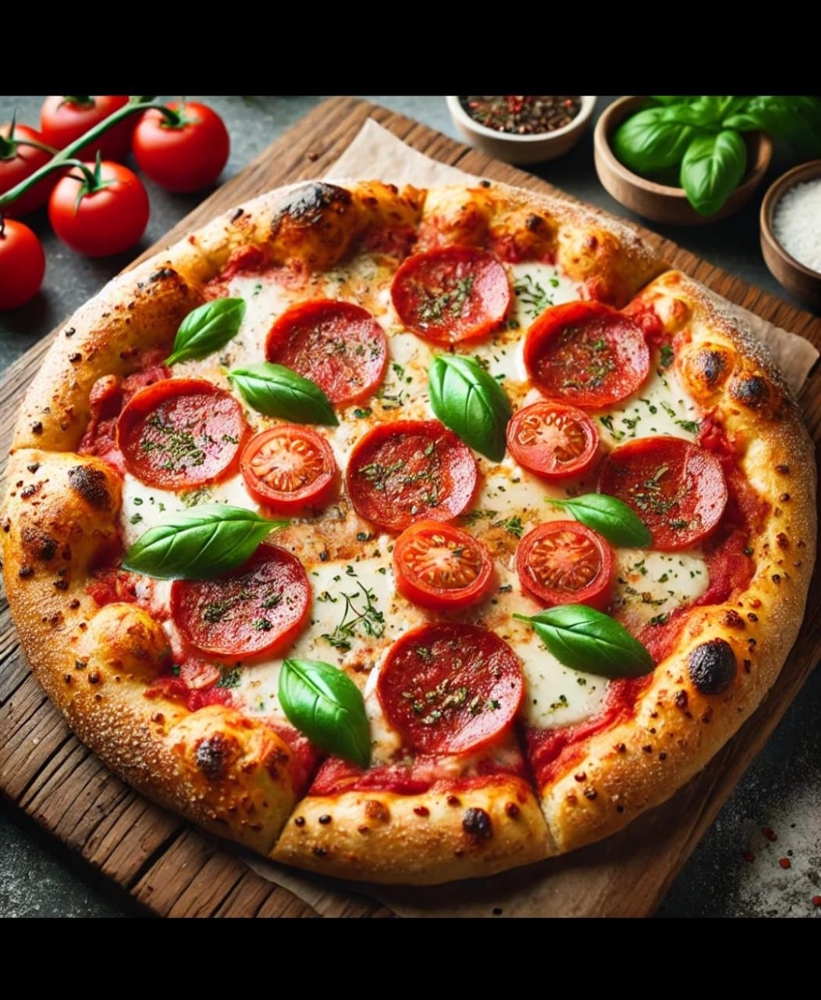
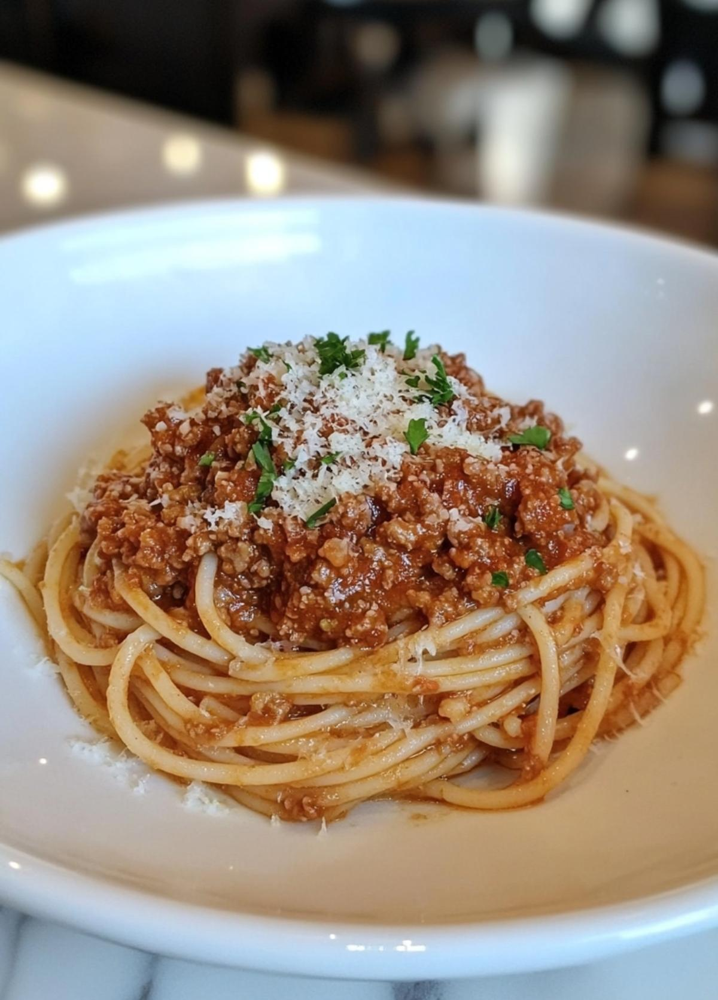
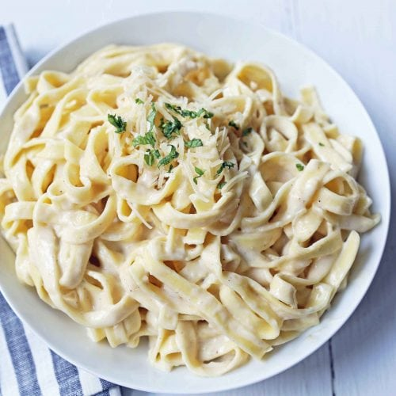

2 1/2 cups all-purpose flour
1 teaspoon sugar
1 packet (2 1/4 teaspoon) active dry yeast
1 cup warm water
1 tablespoon olive oil
1 teaspoon salt
1 cup pizza sauce
2 cups mozzarella cheese
Pepperoni slices (optional)
Fresh basil and oregano for garnish
Prepare the dough: Mix warm water, yeast, and sugar. Let it sit for 5 minutes until foamy. Add flour, salt, and olive oil and knead the dough for 5-7 minutes. Let it rise for 1 hour.
Preheat the oven: Set the oven to 475 degrees Fahrenheit (245 degree celsius).
Assemble the pizza: Roll out the dough into a circle. Spread pizza sauce, add mozzarella cheese, and top with pepperoni and fresh basil.
Bake: Place the pizza in the oven for 12-15 minutes, until the crust is golden and the cheese is melted and bubbly.
Garnish: Sprinkle with oregano and more basil before serving.

400g spaghetti pasta
500g ground beef
1 onion, finely chopped
3 cloves garlic, minced
2 tablespoons olive oil
1 can (400g) crushed tomatoes
2 tablespoons tomato paste
1 teaspoon dried oregano
1 teaspoon dried basil
Salt and pepper to taste
Grated Parmesan cheese for serving
Fresh basil leaves for garnish
Cook the pasta: Bring a large pot of salted water to boil. Cook spaghetti according to package instructions until al dente. Drain and set aside.
Cook the beef: Heat olive oil in a large pan over medium heat. Add chopped onion and garlic, sauté until softened. Add ground beef and cook until browned.
Make the sauce: Add crushed tomatoes, tomato paste, oregano, basil, salt, and pepper. Stir well and let simmer for 20-25 minutes, stirring occasionally.
Combine: Add the cooked spaghetti to the sauce and toss to coat evenly.
Serve: Plate the pasta, sprinkle with grated Parmesan cheese, and garnish with fresh basil leaves.

400g fettuccine pasta
1/2 cup unsalted butter
2 cups heavy cream
2 cups freshly grated Parmesan cheese
3 cloves garlic, minced
Salt and white pepper to taste
Fresh parsley, chopped (for garnish)
Optional: Grilled chicken slices
Cook the pasta: Bring a large pot of salted water to boil. Cook fettuccine according to package instructions until al dente. Reserve 1 cup of pasta water, then drain.
Make the sauce: In a large pan, melt butter over medium heat. Add minced garlic and sauté for 1 minute until fragrant.
Add cream: Pour in the heavy cream and bring to a gentle simmer. Cook for 2-3 minutes, stirring constantly.
Add cheese: Reduce heat to low and gradually stir in the Parmesan cheese until melted and smooth. Season with salt and white pepper.
Combine: Add the drained fettuccine to the sauce and toss well. If sauce is too thick, add reserved pasta water a little at a time.
Serve: Plate immediately, garnish with fresh parsley, and add grilled chicken on top if desired.